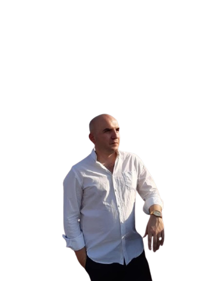

ირაკლი რობაქიძე
- დაბადების თარიღი: 16 თებერვალი, 1978 წელი
- დაბადების ადგილი: თბილისი, საქართველო
- განათლება: თბილისის 51-ე საშუალო სკოლა
განათლება და კვალიფიკაცია
- 2000 წელი: თეატრისა და კინოს სახელმწიფო უნივერსიტეტი – კინომცოდნეობა.
- 2005 წელი: თეატრისა და კინოს სახელმწიფო უნივერსიტეტი – კინოსარეჟისორო.
შემოქმედებითი საქმიანობა
- „ფერადი ქალაქების ისტორია“
- „მოგზაურობა დროში – ზურაბ წერეთელი“
- „მე ვარ მხატვარი“
- „იაგო – მეორე სიცოცხლე“
სამუშაო გამოცდილება
- ტელევიზია: სხვადასხვა წამყვანი ტელეკომპანია – რეჟისორი.
- ამჟამად: Silk Media (სილქმედია) – რეჟისორი.